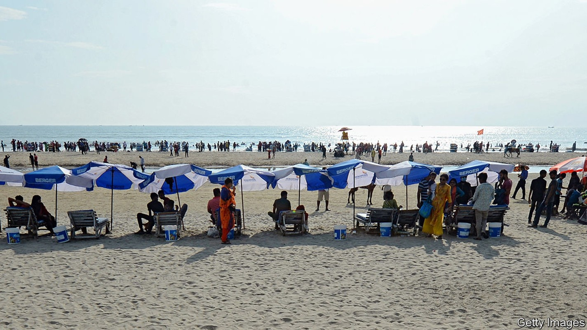
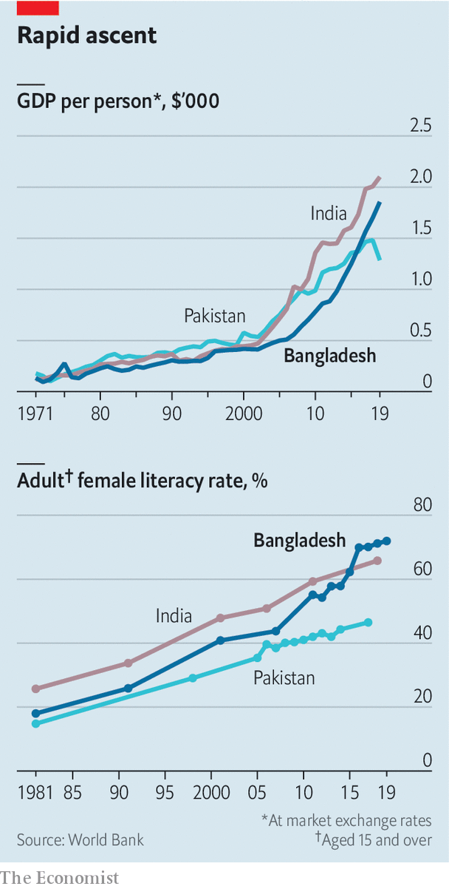

As it turns 50, Bangladesh is doing well, despite its politicians
But the prospects for the next few years look troubling

IN COLONIAL TIMES the eastern half of Bengal was one of the poorest parts of British India. After independence and partition in 1947, it became one of the poorest bits of Pakistan. And after it declared itself an independent country, Bangladesh, in 1971, it became poorer still, as the rump of Pakistan fought a savage war to retain it, destroying a big share of its few assets and killing many of its best and brightest.
Listen to this story.Enjoy more audio and podcasts on iOS or Android.
Listen to this story
Save time by listening to our audio articles as you multitask
Few could have predicted how the tables would turn. This week marks 50 years since Bangladesh’s first president, Sheikh Mujibur Rahman, declared independence on March 26th 1971. Over the intervening period the country’s income per person has surpassed Pakistan’s and is approaching India’s (see left-hand chart). Before the pandemic, economic growth exceeded 7% for four years in a row, outpacing not just Pakistan and India, but even China.
Bangladeshis are not just vastly wealthier, but healthier and better educated too. Some 98% of Bangladeshi children finish primary school, compared with less than a third during the 1980s. Literacy has soared (see chart). Infant mortality has plunged. Virtually everyone uses a toilet rather than defecating in the open. In all these respects, Bangladesh is doing better than both Pakistan and India.

Devastating as the war of independence was, in some ways it set Bangladesh on the path to success. Many expatriates came home to help their new country recover. Zafarullah Chowdhury, who dropped out of university in Britain, set up a charity that helped to distribute cheap generic drugs and contraceptives. Fazle Hasan Abed sold his flat in London to return before founding another charity, BRAC, that taught mothers how to rehydrate children suffering from diarrhoea, turning it from a deadly illness to a nuisance.
The overstretched government was only too happy to allow aid agencies and NGOs to take on such tasks. In a drive in the 1980s to vaccinate children against diseases like polio, the country was split down the middle: the government took one half, BRAC the other. By the end of the decade the immunisation rate had risen from 2% to 80%.
Charities like BRAC had an especially big impact because they targeted women. By the 1990s it was running 64,000 schools, which were not only educating girls but employing women to teach in them. There are now more girls in high school than boys (another difference from India and Pakistan). BRAC and other organisations also popularised microcredit, turning millions of rural women into entrepreneurs.
Bangladesh’s booming garment industry has helped to improve women’s welfare, too, argues Rubana Huq of the Bangladesh Garment Manufacturers and Exporters Association. The share of women in paid work has risen from 3% 50 years ago to 36% today. Some 80% of Bangladesh’s 4m garment workers are women. Their work “earns them economic freedom and dignity at home and outside”, says Ms Huq.
The garment industry has become the world’s second largest, accounting for 11% of GDP and 80% of export revenue. Successive governments have helped mainly by getting out of the way, simplifying labour laws and removing import duties on inputs. This free-market approach was crucial in fomenting growth, says Fahmida Khatun of the Centre for Policy Dialogue, a think-tank in Dhaka.
Yet Bangladesh’s politics is as depressing as its development is uplifting. Sheikh Mujib tried to turn the country into a one-party state, but was quickly assassinated. The current prime minister, his daughter, Sheikh Hasina Wazed, seems determined to make his vision a reality. Since coming to power for a second time in 2009, she has abolished the practice of holding elections under an impartial caretaker government. The main opposition figure, Khaleda Zia, was arrested in 2015. She has since been convicted of corruption and banned from politics in a trial she says was politically motivated. Before the most recent election, in 2018, opposition parties claimed that more than 7,000 of their activists had been arrested. Many opposition candidates, like Ms Zia, were barred from running owing to criminal convictions. Sheikh Hasina’s Awami League and its allies won 288 of 300 seats.
It is not just opposition activists, but also journalists and other critics of the government who increasingly wind up behind bars. In 2018 the government introduced the Digital Security Act, supposedly to curb religious radicalism and pornography online. But its vague provisions, which include stiff jail sentences for those who post “aggressive or frightening” content, have been used to silence critics of all sorts. Mushtaq Ahmed, a writer, was arrested last year after criticising the government’s response to covid-19 on Facebook. He died in prison last month, having been denied bail six times.
Members of the Awami League, meanwhile, easily secure bail for serious crimes, if they are charged at all. Government contracts often go to the party’s cronies. State-owned banks are weighed down by loans that well-connected borrowers decline to repay. There is no point going to court: the party with the closer ties to the Awami League always wins. “We literally don’t have breach of contract cases anymore,” explains Shahdeen Malik, a lawyer who argues cases before the Supreme Court. The tax code, which relies more on levies on consumption than on income or wealth, is also skewed in favour of the rich and politically connected.
The iniquities of this system are beginning to be reflected in the economic data. Between 2010 and 2016 the richesthouseholds saw their income rise by nearly a quarter, while the poorest households saw theirs decline by a third. Zahid Hussain, a former lead economist on Bangladesh for the World Bank, blames the rent-seeking behaviour of the elite. Corruption knocks two percentage points off GDP growth each year, the bank has estimated. At any rate, foreign investment has stagnated, perhaps owing in part to the caprice of the courts.
Covid-19 has exacerbated inequality by pushing millions who had escaped poverty back into it. The proportion of Bangladeshis living below the national poverty line has risen from around a quarter to 40% or so, says Asif Saleh, the head of BRAC. No one is able to travel abroad for work anymore, which bodes ill for future flows of remittances. These reached almost $20bn last year. Garment factories have been battered by cancellations, as lockdowns abroad have crimped sales of clothing.
The increase in women’s participation in the workforce has slowed, notes Ms Huq. Between 2005 and 2010it grew by 1.7 percentage points a year on average, but since then by only 0.7 percentage points a year. She thinks women’s rights are in retreat, too. Without the rule of law or political accountability, violence against women goes unchecked, she argues.
By centralising power in herself, Sheikh Hasina has also added an element of political uncertainty. As tight as her grip on her country is, it cannot endure past the grave. She is 73, but has no clear successor. Relatives and other close allies appear to be jockeying for position. Her son, Sajeeb Wazed, is an adviser to the government. His sister, Saima Wazed, who had been living in Canada, has recently been given a number of government jobs, prompting speculation that she is being groomed for power. Other contenders include their cousin, Radwan Mujib Siddiq Bobby, who has begun publishing a magazine about public policy, and Sheikh Fazle Noor Taposh, the mayor of South Dhaka. His parents were assassinated along with Sheikh Hasina’s in 1975. None of them has the same venerable status as Sheikh Hasina, however, and none is a plausible reformer.
Some speculate that change may come from the army, which has seized control several times in the past. But Sheikh Hasina has a tight grip on it, too. Al-Jazeera, a broadcaster based in Qatar, recently exposed the close personal ties between Sheikh Hasina and the current army chief.
Others fear Islamic radicalism. In 2016 religious extremists killed 24 people at a restaurant and bakery in Dhaka. Sheikh Hasina has cracked down on some Islamist groups, cajoling the courts to ban a prominent Islamic party, Jamaat-e-Islami, which fought alongside Pakistan in the war of independence. But she has cosied up to others, including Hefazat-e-Islam, which has agitated against the secularism for which the Awami League theoretically stands. Ordinary Bangladeshis, some 90% of whom are Muslim, have grown more religiously observant in recent years, but few seem to hanker for a theocracy.
Indeed, so complete has the Awami League’s control become that it is hard to know what ordinary Bangladeshis do want. Most will presumably be content if their personal welfare improves in the future as rapidly as it has done over the past 50 years. That happened largely in spite of Bangladesh’s politicians, however, not thanks to them. ■